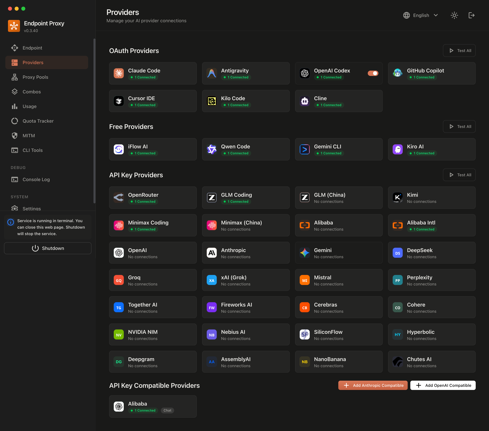

AI infrastructureFeatured / Developer systems
AIMix
One gateway. Every model. Smart execution.
A self-hosted AI gateway for connecting applications, developer tools, and agents to model providers through a consistent interface.
MIT-licensed · review security and contribution policies in the repository.
Explore AIMix